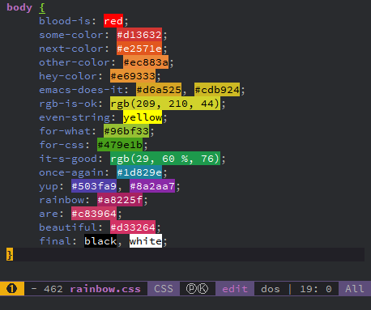

You are viewing the documentation for the develop branch. The documentation for the release version is here .
Colors layer
Table of ContentsClose

1. Description
This layer colors your life by enhancing the existing coloration of identifiers as well as providing you with a more colorful process indicator.
1.1. Features:
- Colorize all identifiers (Christmas tree mode :-)) with mostly unique colors, and the ability to choose saturation and lightness with rainbow-identifiers.
- Colorize only identifiers recognized as variables with color-identifiers.
- Colorize strings representing colors with the color they represent as background with rainbow-mode.
- Display a Nyan cat progress bar in the mode-line with nyan-mode.
2. Install
To use this configuration layer, add it to your ~/.spacemacs. You will need to
add colors to the existing dotspacemacs-configuration-layers list in this
file.
3. Configuration
3.1. Colorize identifiers
To colorize variable identifiers using color-identifiers and its supported languages,
set the layer variable colors-colorize-identifiers to variables.
If you want to colorize all identifiers using the more universal rainbow-identifiers
method instead, set the layer variable colors-colorize-identifiers to all.
(setq-default dotspacemacs-configuration-layers '( (colors :variables colors-colorize-identifiers 'all)))
When using the value all (rainbow-identifiers method), the Saturation and Lightness
used for colors can be set on a per-theme basis by adding an entry to the variable
colors-theme-identifiers-sat&light. This is an alist where the key is a theme symbol
and the value is a pair (saturation lightness).
For now, saturation and lightness are not supported via a variables value!
Instead, you must push themes into the alist in your dotspacemacs/user-config section,
and then refresh the values to ensure your overrides are applied to your current theme.
Two handy built-in functions makes both of those steps very easy.
Example:
(defun dotspacemacs/user-config () ;; add per-theme sat&light overrides and refresh values for your current theme (colors/add-theme-sat&light 'mytheme '(50 50)) (colors/add-theme-sat&light 'anothertheme '(90 40)) (colors/refresh-theme-look) )
For all themes that lack per-theme overrides, it uses default saturation and lightness.
You can configure your own defaults via colors-default-rainbow-identifiers-sat
and colors-default-rainbow-identifiers-light, which can be set via variables.
(setq-default dotspacemacs-configuration-layers '( (colors :variables colors-colorize-identifiers 'all colors-default-rainbow-identifiers-sat 42 colors-default-rainbow-identifiers-light 86) )
3.2. Enable Nyan cat
To enable the package nyan-mode just set the variable
colors-enable-nyan-cat-progress-bar to t:
(setq-default dotspacemacs-configuration-layers '( (colors :variables colors-enable-nyan-cat-progress-bar t)))
It may be handy to enable it only when Emacs is running in a GUI. You can do that by using a quasi-quoted list which checks the Emacs mode:
(setq-default dotspacemacs-configuration-layers '( (colors :variables colors-enable-nyan-cat-progress-bar (display-graphic-p))))
4. Key bindings
4.1. Colorize Identifiers
| Key binding | Description |
|---|---|
SPC t C a |
colorize all identifiers in current buffer (rainbow-identifiers mode) |
SPC t C C-a |
globally colorize all identifiers and all subsequent buffers |
SPC t C v |
colorize only variables in current buffer (color-identifiers mode) |
SPC t C C-v |
globally colorize only variables and all subsequent buffers |
The saturation and lightness of rainbow-identifier mode's colors
can be adjusted live via the following transient-state:
| Key binding | Description |
|---|---|
SPC C i s |
initiate change saturation mini-mode |
SPC C i l |
initiate change lightness mini-mode |
+ |
increase the saturation or lightness |
- |
decrease the saturation or lightness |
= |
reset the saturation or lightness |
Any other key |
leave the change mini-mode |
4.2. Rainbow Mode

rainbow-mode mode is different from both rainbow-identifiers and color-identifiers.
It can be used together with either (or none) of the identifier colorizers.
All detected color codes in the current buffer will be be highlighted as their actual color. However, for accurate display, this mode requires that you use GUI Emacs and that you haven't disabled sRGB mode (if your platform uses that).
To enable, you must manually toggle it on and off on a per-buffer basis with:
SPC t C c
4.3. Nyan Mode
nyan-mode mode can be toggled on and off with:
SPC t m n
Note that the toggle is local to the current buffer.